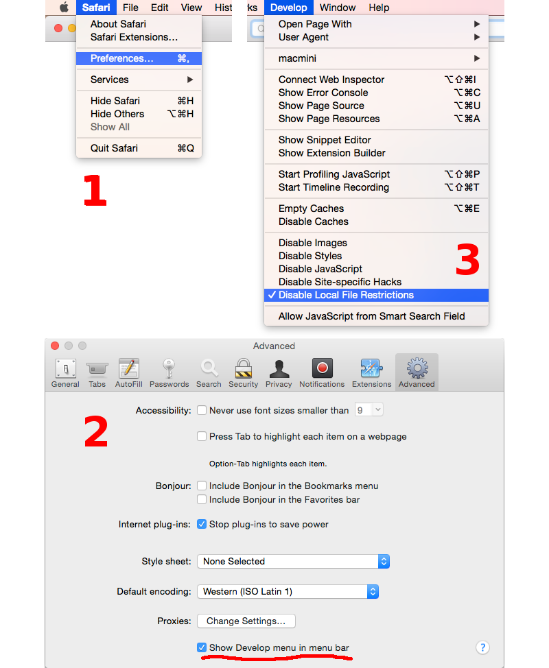

Разработчикам приложений¶
Hello world!¶
Простейшее приложение на основе Blend4Web может иметь вид:
<!DOCTYPE html>
<html>
<head>
<script src="b4w.min.js"></script>
<script>
function hello() {
var m_version = b4w.require("version");
document.body.innerHTML = "Hello, Blend4Web " + m_version.version() + "!";
}
</script>
</head>
<body onload="hello()"></body>
</html>
Приложение выводит сообщение и текущую версию движка в окне браузера. Рассмотрим представленный пример. Базовый код движка (без дополнений) подключается с помощью тега <script src="...">. Далее, приложение ожидает окончания загрузки страницы и выводит сообщение в окне браузера. В данном примере используется единственный модуль version, в котором находится одноимённая функция version(). Подробную информацию о предназначении модулей и функций движка можно найти в документации по API.
Файл b4w.min.js со скомпилированным кодом движка необходимо скопировать из директории SDK deploy/apps/common и разместить в той же директории, что и представленный HTML-файл.
Загрузка сцены в приложение¶
Для того, чтобы загрузить трёхмерную сцену, требуется выполнить следующую последовательность действий:
- Разместить на странице элемент
<canvas>, на котором будет производиться рендеринг. - После загрузки страницы, для инициализации контекста WebGL, вызвать функцию
m_main.init()с идентификатором созданного элемента. - Вызвать функцию
m_data.load()для загрузки трёхмерной сцены.
<!DOCTYPE html>
<html>
<head>
<script src="b4w.min.js"></script>
<script>
function hello() {
var m_main = b4w.require("main");
var m_data = b4w.require("data");
var canvas_elem = document.getElementById("canvas_id");
m_main.init(canvas_elem);
m_data.load("some_scene.json");
}
</script>
</head>
<body onload="hello()"><canvas id="canvas_id"></canvas></body>
</html>
Следует отметить, что реальное приложение должно включать в себя проверку ошибок, настройку движка перед инициализацией, а также базовую систему взаимодействия с пользователем.
Быстрое создание приложений¶
Поскольку создание приложения с нуля может быть достаточно сложной операцей, особенно для начинающих пользователей, в движке существует специальное дополнение app:
<!DOCTYPE html>
<html>
<head>
<script src="b4w.full.min.js"></script>
<script>
var m_app = b4w.require("app");
var m_data = b4w.require("data");
m_app.init({
canvas_container_id: "container_id",
callback: load_cb
});
function load_cb()
m_data.load("some_scene.json", loaded_cb);
}
function loaded_cb() {
m_app.enable_controls();
m_app.enable_camera_controls();
}
</script>
</head>
<body>
<div id="container_id" style="width: 350px; height: 200px;"></div>
</body>
</html>
В данном случае модуль app создаст элемент <canvas> внутри контейнера с
указанным идентификатором container_id, осуществит инициализацию движка при
загрузке страницы и сообщит о её окончании с помощью обработчика load_cb.
Далее загружается сцена some_scene.json, аналогично предыдущему примеру, с тем лишь отличием, что по окончании загрузки этой сцены инициализируется подсистема управления и активируются средства для перемещения камеры с помощью клавиатуры и мыши (сенсорного экрана для мобильных устройств).
При использовании модуля app необходимо явно задавать размеры контейнерного элемента, поскольку в противном случае создаваемый элемент <canvas> будет иметь нулевые размеры.
Разработка приложений в составе SDK¶
В составе SDK присутствует скрипт apps_dev/project.py, предназначенный для
сборки приложений.
Пример:
./project.py -a my_app_path -o advanced -b copy -v 15.02 -s my_resources_path
- Опция
"-a"указывает на имя директории, в которой находится приложение. - Опция
"-o"(необязательная) используется для указания метода оптимизации js-файлов. Доступные варианты: whitespace, simple (по умолчанию) и advanced. - Опция
"-b"(необязательная) указывает из какой директории брать движок. Доступные варианты: link (по умолчанию) - движок подключается из директорииdeploy/apps/common/, copy - движок копируется в директорию с собранным приложением, combine - движок объединяется с минимизированным скриптом в корне приложения, compile - необходимые модули движка компилируются вместе со скриптами приложения. - Опция
"-d"(необязательная) указывает в какой директории размещать скомпилированное приложение. - Опция
"-s"(необязательная) указывает из какой директории брать ресурсы для сцены. - Опция
"-p"(необязательная) указывает в какой директории будут располагаться ресурсы для сцены относительно корня приложения. - Опция
"-v"(необязательная) добавляет к скриптам и стилям версию. Это делается для того, чтобы браузер не брал из кэша старые скрипты и стили. - Опция
"-j"(необязательная) добавляет в исключения скрипты, которые не будут скомпилированы. - Опция
"-c"(необязательная) добавляет в исключения стили, которые не будут скомпилированы.
Структура приложения:
- В корне директории должен находится единственный html-файл.
- Скрипты и стили могут находиться как в корне приложения, так и во вложенных папках.
Описание работы сборщика приложений:
- Приложение полностью копируется в директорию
deploy/apps/app_name/. - Если указана опция ‘-d’, приложение копируется в соответствующую директорию.
- Скрипты и стили компилируются относительно родительской директории.
Специфика неполноэкранных приложений¶
Элемент Canvas, на котором осуществляется рендеринг, может изменять своё местоположение относительно окна браузера. Это может происходить в результате манипуляций, проводимых над DOM-деревом, либо в результате скроллинга страницы, что особенно актуально для неполноэкранных приложений.
В большинстве случаев это не будет никак сказываться на работе приложения. Однако для событий, связанных с положением курсора мыши или позицией касания на touch-устройстве, возможно получение некорректных результатов. Это происходит, потому что координаты, получаемые из соответствующих событий, принадлежат системе отсчета относительно окна браузера, а движок работает с координатами в системе отсчета именно Canvas элемента (верхний левый угол элемента).
Чтобы получить координаты, подходящие для использования в движке, можно провести преобразование при помощи метода client_to_canvas_coords модуля container:
var m_cont = require("container");
var _vec2_tmp = new Float32Array(2);
// . . .
var canvas_xy = m_cont.client_to_canvas_coords(event.clientX, event.clientY, _vec2_tmp);
// . . .
Для получения координат в системе отсчета Canvas элемента, движок должен знать его положение относительно окна браузера. Однако, если оно будет меняться во время работы приложения (тот же скроллинг), то необходимо будет как-то пересчитывать позицию Canvas’а. Для того, чтобы это происходило автоматически, нужно выставить настройку track_container_position при инициализации приложения:
exports.init = function() {
m_app.init({
// . . .
track_container_position: true,
// . . .
});
// . . .
}
При её использовании в некоторых браузерах (например, Firefox) возможно незначительное снижение производительности вследствие частого обращения к DOM-дереву.
Если этот момент критичен, то вместо флага track_container_position можно пользоваться методами force_offsets_updating, update_canvas_offsets или более низкоуровневым set_canvas_offsets из модуля container для обновления положения элемента Canvas вручную, когда это действительно необходимо:
var m_cont = require("container");
// . . .
m_cont.force_offsets_updating();
// . . .
m_cont.update_canvas_offsets();
// . . .
m_cont.set_canvas_offsets(offset_left, offset_top);
// . . .
Примеры кода¶
В составе SDK присутствует приложение Code Snippets, демонстрирующее примеры использования функционала движка.
- На данный момент приложение включает в себя следующие примеры:
- Canvas Texture - пример работы с canvas-текстурой
- Camera Animation - создание процедурной анимации камеры
- Camera Move Styles - переключение режимов управления камерой
- Custom Anchors - процедурное создание аннотаций
- Dynamic Geometry - процедурное изменение геометрии
- Gyro (Mobile Only) - пример работы с гироскопом мобильных устройств
- Instancing - копирование объектов сцены
- Material API - изменение свойств материалов и замена материалов объекта
- Morphing - использование ключей деформации объекта
Приложение Code Snippets доступно по пути SDK/apps_dev/code_snippets/code_snippets_dev.html. Также оно доступно из файла index.html в корне SDK.
Конвертация ресурсов¶
Существующие браузеры не полностью поддерживают основные форматы медиаданных, поэтому для создания кроссбраузерных приложений, а также с целью оптимизации, необходимо использовать конвертер ресурсов. Преобразование происходит по схеме:
- для аудио (convert_media):
- ogg -> mp4
- mp3 -> ogg
- mp4 -> ogg
Рекомендуется использовать в качестве базового формата Ogg, в этом случае для обеспечения кросс-браузерной совместимости потребуется только преобразование из ogg в mp4. Пример файла на входе: file_name.ogg, пример файла на выходе: file_name.altconv.mp4.
- для видео (convert_media):
- webm -> m4v
- m4v -> webm
- ogv -> webm
- webm -> seq
- m4v -> seq
- ogv -> seq
Рекомендуется использовать в качестве базового формата WebM, в этом случае для обеспечения кросс-браузерной совместимости потребуется только преобразование из webm в m4v (из webm в seq для iPhone). Пример файла на входе: file_name.webm, пример файла на выходе: file_name.altconv.m4v.
- для изображений (convert_dds):
- png -> dds
- jpg -> dds
Пример файла на входе: file_name.jpg, пример файла на выходе: file_name.jpg.dds.
В целях оптимизации работы приложения существует возможность использования min50 (уменьшенных вдвое) и DDS текстур. Для этого при инициализации приложения необходимо передать следующие параметры:
exports.init = function() {
m_app.init({
// . . .
assets_dds_available: true,
assets_min50_available: true,
// . . .
});
// . . .
}
Файл формата .seq представляет собой раскадрированное видео. Применяется на
IE 11 и iPhone, поскольку на них возникают трудности при использовании видео
стандартного формата в качестве текстуры. Использование dds-формата для
изображений является более оптимальным по сравнению с другими форматами.
В состав дистрибутива включен Python скрипт (scripts/converter.py) для конвертации исходных файлов в другие форматы с целью расширения спектра поддерживаемых платформ, а также для уменьшения размера ресурсов. Для конвертации необходимо выполнить команду:
> ./converter.py [-d file_path] resize_textures | convert_dds | convert_media
С помощью опции -d можно указать путь к директории, в которой будет производится конвертация.
При необходимости исключить некоторую директорию при конвертации, достаточно
разместить в ней файл с именем .b4w_no_conv. На конвертацию во вложенных
директориях это не повлияет.
Аргумент resize_textures используется для изменения размера текстур в режиме LOW.
Движком могут использоваться файлы, созданные пользователем вручную и имеющие
следующие наименования: file_name.altconv.m4v, file_name.altconv.mp3
и т.д. Такие файлы необходимо размещать в одной директории с медиафайлом,
используемым в Blender’e.
Вы также можете использовать бесплатную кроссплатформенную программу Miro Video Converter для конвертации медиаданных.
Система модулей¶
Несмотря на то, что движок предоставляет прикладному программисту API в объёме
десятков модулей, в процессе работы он занимает в глобальном пространстве имён
единственный объект b4w. При необходимости обращения к модулю, последний
импортируется с помощью вызова функции b4w.require.
Допустима регистрация сторонних модулей, если их имена не пересекаются с
имеющимися. Регистрация происходит посредством вызова b4w.register.
Проверка наличия модуля с некоторым именем может быть осуществлена с помощью
b4w.module_check.
Пример:
// check if module exists
if (b4w.module_check("my_module"))
throw "Failed to register module: my_module";
// register my_module
b4w.register("my_module", function(exports, require) {
// import module "version"
var m_version = require("version");
// export print_build_date() from module "my_module"
exports.print_build_date = function() {
// exec function date() from module "version"
console.log("Engine build date: " + m_version.date());
}
});
// import module "my_module"
var m_my_module = b4w.require("my_module");
// exec function print_build_date() from module "my_module"
m_my_module.print_build_date();
Событийная модель¶
Событийная модель предоставляет унифицированный интерфейс для описания изменения состояний 3D сцены, упрощая обработку событий физики и действий пользователя.
Сенсоры¶
Основным блоком событийной модели является сенсор (sensor). Сенсор является программной сущностью, и может быть только активным (1, единица) или неактивным (0, ноль). Некоторые сенсоры несут полезную нагрузку (payload). Например, сенсор трассировки лучей (Ray Sensor) предоставляет относительную длину луча пересечения.
Управление сенсорами не доступно пользователю в виде открытого API. Вместо этого
каждый сенсор должен присутствовать в одном или нескольких множествах (sensor
manifold). Множество является логическим контейнером, ассоциированным с объектом на сцене.
Оно генерирует ответ на определенный набор событий сенсоров в виде вызова
функции-обработчика. Для определения множества необходимо иметь
следующую информацию (см. также описание функции controls.create_sensor_manifold() в документации по API):
Объект-носитель множества (например, бросаемый объект).
Уникальный идентификатор множества (например, “IMPACT”).
Тип вызова функции-обработчика (варианты:
CT_CONTINUOUS- непрерывный,CT_LEVEL- уровень,CT_SHOT- одномоментный,CT_TRIGGER- переключающий).Массив сенсоров.
Логическая функция, определяющая при какой комбинации состояний сенсоров вызывается функция-обработчик.
Функция-обработчик.
Необязательный параметр, который может быть передан в функцию-обработчик.
Пример¶
Поставлена задача озвучить удар бросаемого камня так, чтобы при ударе о различные среды (например, земля и стена) выводился характерный звук. На сцене в Blender’е имеются ограничивающие меши с физическими материалами, их идентификаторы “TERRAIN” и “WALL”. На сцене также присутствует бросаемый физический объект с названием “Stone”.
Определим по одному сенсору соударения (Collision Sensor) для каждой среды, по типу издаваемого звука.
// import the modules
var m_scenes = b4w.require("scenes");
var m_controls = b4w.require("controls");
// get the object being thrown
var stone = m_scenes.get_object_by_name("Stone");
// create the sensors
var sensor_impact_terrain = m_controls.create_collision_sensor(stone, "TERRAIN");
var sensor_impact_wall = m_controls.create_collision_sensor(stone, "WALL");
Добавим сенсоры в массив. В качестве логической функции используем логическое ИЛИ. В обработчике напишем код для воспроизведения звука. Создадим множество сенсоров с идентификатором “IMPACT” и типом CT_SHOT (одномоментный).
// array of the sensors
var impact_sens_array = [sensor_impact_terrain, sensor_impact_wall];
// manifold logic function
var impact_sens_logic = function(s) {return (s[0] || s[1])};
// callback
var impact_cb = function(obj, manifold_id, pulse) {
// NOTE: it's possible to play both sounds simultaneously
if (m_controls.get_sensor_value(obj, manifold_id, 0) == 1) {
// ...
console.log("play the terrain impact sound");
}
if (m_controls.get_sensor_value(obj, manifold_id, 1) == 1) {
// ...
console.log("play the wall impact sound");
}
}
// create the manifold
m_controls.create_sensor_manifold(stone, "IMPACT", m_ctl.CT_SHOT,
impact_sens_array, impact_sens_logic, impact_cb);
При столкновении объекта “Stone” с любым из физических материалов “TERRAIN” или “WALL” происходит вызов функции-обработчика. Внутри этой функции получим значения обоих сенсоров по их индексу в массиве сенсоров (0 - “TERRAIN”, 1 - “WALL”). Значение сенсора = 1 (активный) означает, что произошло столкновение с соответствующим физическим материалом. В результате воспроизводится соответствующий звук (код не показан).
Профили качества изображения¶
Для поддержки различных по функциональности платформ в движке реализовано несколько профилей качества изображения:
- низкое качество (P_LOW) - отключен ряд функций (тени, динамическое отражение, постпроцессинг), размер текстур для сборочной версии уменьшен вдвое, антиалиасинг отключен
- высокое качество (P_HIGH) - используются все запрошенные сценой функции, метод антиалиасинга FXAA
- максимальное качество (P_ULTRA) - вдвое увеличено разрешение рендеринга, увеличено разрешение карт теней, метод антиалиасинга SMAA

Переключение профилей качества осуществляется программно, до инициализации контекста WebGL. Профиль по умолчанию P_HIGH.
var m_cfg = b4w.require("config");
var m_main = b4w.require("main");
m_cfg.set("quality", m_cfg.P_LOW);
m_main.init(...);
Разработчики приложений могут также установить параметр quality при инициализации движка с использованием дополнения app.js:
var m_cfg = b4w.require("config");
var m_app = b4w.require("app");
m_app.init({
canvas_container_id: "body_id",
quality: m_cfg.P_HIGH
});
Файловая структура SDK¶
- apps_dev
исходный код приложений (не все приложения доступны в бесплатной версии)
- Makefile
- файл для сборки всех приложений из состава SDK
- project.py
- скрипт для разработчиков приложений
- viewer
исходные файлы приложения для просмотра сцен Viewer
- assets.json
- метаданные с информацией о сценах, загружаемых просмотрщиком сцен Viewer
- csrc
- исходный код бинарной части экспортера движка и других утилит на языке C
- doc_src
- исходный код настоящего руководства пользователя на языке разметки reST
- blender
- исходные файлы сцен в формате Blender (не все сцены доступны в бесплатной версии)
- blender_scripts
- экспортер и вспомогательные скрипты для Blender’а
- deploy
директория с ресурсами для размещения на сервере (исходные файлы сцен, скомпилированные приложения и документация)
- api_doc
- документация API движка для разработчиков (собирается автоматически, на основе исходного кода движка)
- apps
3D-приложения, предназначенные для развертывания, директория дублирует apps_dev
- common
- Файлы скомпилированного движка. Используются приложениями из состава SDK (отсюда и название).
- assets
- загружаемые ресурсы: сцены, текстуры, звуковые файлы
- doc
- настоящее руководство пользователя в формате HTML, собирается автоматически из doc_src
- globals_detect
- вспомогательный код для определения глобальных переменных
- tutorials
- исходные файлы обучающих примеров
- index.html и index_assets
- файлы главной веб-страницы SDK
- license
- файлы с текстами лицензионных соглашений
- Makefile
- файл сборки для компиляции движка, приложений, документации, развертывания на удаленном сервере (недоступен в бесплатной версии)
- README.rst
- файл README
- scripts
дополнительные скрипты
- chrome_debug.sh
- скрипт, запускающий браузер Chrome в режиме отладки
- compile_b4w.py
- скрипт для сборки кода движка и приложений
- converter.py
- скрипт, осуществляющий: уменьшение разрешения текстур вдвое, компрессию текстур в формат DDS, конвертацию звуковых файлов в форматы mp4 и ogg
- custom_json_encoder.py
- форк Python-модуля json, сортирует ключи по алфавиту в обратном порядке
- gen_glmatrix.sh
- скрипт для генерации математического модуля на основе исходных файлов из репозитория glMatrix 2
- graph.sh
- генератор текущего графа сцены в формате svg, используется для отладки рендеринга
- memory.sh
- скрипт для проверки обычной (RAM) и видео-памяти (VRAM)
- plot.sh
- построитель графиков отладочной информации
- reexporter.py
- скрипт для автоматического переэкспорта всех сцен из состава SDK
- remove_alpha_channel.sh
- скрипт для удаления альфа-канала изображения
- report_unused_resources.py
- скрипт для проверки и сообщения о неиспользуемых ресурсах (изображения и звуки, на которые ссылаются экспотируемые файлы)
- screencast.sh
- скрипт для записи видео с экрана
- shader_analyzer.py
- скрипт, запускающий локальный веб-сервер, который осуществляет подсчет сложности шейдеров
- shaders
- GLSL-шейдеры движка
- src
основной исходный код ядра движка
- addons
- исходный код дополнений движка
- ext
- исходный код внешних объявлений, формирующих API движка
- libs
- исходный код библиотек
- tools
Различные инструменты для сборки движка и приложений
- closure-compiler
- компилятор Google Closure, файлы исключений к нему, генераторы файлов исключений
- glsl
- compiler
- компилятор GLSL-шейдеров движка
- pegjs
- грамматики парсер-генератора PEG.js для реализации препроцессора GLSL, а также скрипт для генерации модулей парсеров из этих грамматик
- yuicompressor
- утилита для сжатия файлов CSS
- uranium
- исходный код и скрипты сборки физического движка Uranium (форк Bullet)
- VERSION
- содержит текущую версию движка
Текстура типа Canvas¶
Для работы с подобными текстурами используется модуль textures. Пример работы с ним описан ниже.
var m_tex = require("textures");
...
var ctx = m_tex.get_canvas_texture_context("canvas_id");
...
// operations with canvas context
...
m_tex.update_canvas_texture_context("canvas_id");
Для получения контекста используется функция get_canvas_texture_context(), куда передается идентификатор “canvas_id”, задаваемый пользователем в Blender. После преобразований с контекстом вызывается функция update_canvas_texture_context(), которая осуществляет визуализацию изменений элемента с идентификатором “canvas_id”.
Настройка браузера для загрузки локальных ресурсов¶
Начиная с версии 15.02, в состав Blend4Web SDK входит сервер разработки, решающий проблему загрузки локальных ресурсов. Тем не менее, приведенные ниже инструкции могут быть полезны разработчикам.
Рендерер движка является Web-приложением, и его работа происходит при просмотре HTML-файла в браузере. После инициализации происходит загрузка ресурсов (сцен, текстур), которая подчиняется правилу ограничения домена, запрещающему, в частности, загрузку из локальной директории. Простым способом обхода этого ограничения может быть настройка браузера для загрузки локальных ресурсов. Другой способ - использование локального web-сервера.
Настройка браузера для загрузки локальных ресурсов является простым и универсальным методом обойти ограничения безопасности. Однако использовать настроенный подобным образом браузер рекомендуется только для просмотра локального контента.
Chrome на Windows:
Правой кнопкой мыши нажать на ярлыке на рабочем столе, выбрать Свойства (Properties), после чего в поле для пути к исполняемому файлу добавить после пробела --allow-file-access-from-files. Нажать ОК.

Для удобства можно предварительно создать копию ярлыка и изменить ее для локального просмотра, оставив оригинальную версию ярлыка для запуска браузера в обычном режиме.
Chrome на OS X:
Открыть Терминал и запустить браузер с параметром:
> /Applications/GoogleChrome.app/Contents/MacOS/GoogleChrome –allow-file-access-from-files
Chrome/Chromium на Linux:
Запустить браузер с параметром:
> google-chrome --allow-file-access-from-files
или:
> chromium-browser --allow-file-access-from-files
Firefox на Windows/Linux/OS X:
Ввести about:config в адресную строку браузера, найти параметр security.fileuri.strict_origin_policy и переключить его двойным щелчком мыши из true в false.

Safari/OS X:
Включить в настройках отображение меню “Develop”, затем активировать опцию “Disable Local File Restrictions”.
{kind=link}
Запуск локального сервера¶
При желании вместо имеющегося в составе SDK сервера разработки можно использовать собственный web-сервер. Наиболее простым решением является использование простого веб-сервера из стандартной библиотеки Python.
На Windows:
Загрузить и инсталлировать последнюю версию Python с официального сайта. В процессе установки выберите опцию добавления пути к исполняемому файлу (
Add python.exe to Path).Запустить командную строку (Command Prompt).
Выполнить команду в корневой директории SDK:
> python -m http.server
На Linux/OS X:
В случае отсутствия в дистрибутиве, загрузить и инсталлировать последнюю версию Python с официального сайта.
Запустить командную строку (Terminal).
Выполнить команду в корневой директории SDK:
> python3 -m http.server
После загрузки сервера, в любом браузере открыть корневую страницу с приложениями из состава SDK, расположенную по адресу http://localhost:8000.
В случае необходимости, можно указать порт дополнительным параметром:
> python3 -m http.server 8080